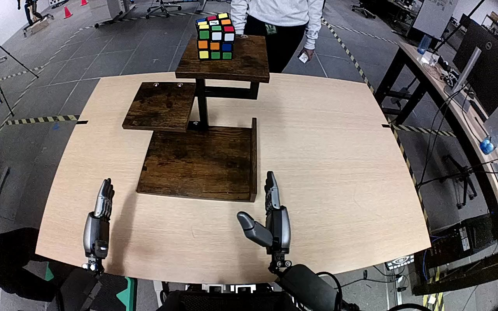

NVIDIA GR1 · 32
Video 32

Visual review action_review.json
{
"prompt_protocol": "humanoid_action_v1",
"prompt_provenance": "visually_authored_from_video_and_initial_frame",
"reviewed_contact_sheets": [
"sheet_001.jpg"
],
"inspected_frame_stride": 2,
"inspected_sampled_frame_count": 60,
"initial_scene": "A multicolored Rubik's cube rests on the highest tier of a brown three-tier shelf. Both robot hands extend from the near side of the table toward the shelf; a person stands across the table.",
"observed_sequence": [
{
"start_frame": 0,
"end_frame": 10,
"action": "Both hands are open near the table edge, and the cube rests on the top shelf.",
"confidence": "high"
},
{
"start_frame": 11,
"end_frame": 32,
"action": "The right arm raises and advances its open hand toward the cube on the top shelf; the left hand stays near the table edge.",
"confidence": "high"
},
{
"start_frame": 33,
"end_frame": 61,
"action": "The right hand positions its opposing thumb and fingers around the cube and closes onto it. The person brings a hand close to the shelf; the cube remains at the top tier while the robot establishes its grasp.",
"confidence": "high"
},
{
"start_frame": 62,
"end_frame": 70,
"action": "The right hand lifts the cube clear of the top shelf. The person begins repositioning the shelf while the robot keeps the cube grasped.",
"confidence": "high"
},
{
"start_frame": 71,
"end_frame": 88,
"action": "The right hand carries the cube downward toward the near side while the person holds the upper tier and shifts the entire shelf to the robot's right, repositioning the bottom tier.",
"confidence": "high"
},
{
"start_frame": 89,
"end_frame": 114,
"action": "The right hand moves the cube toward the repositioned bottom shelf, lowers it to the shelf surface, and tips it slightly while maintaining the grasp. The person lets go of the shelf.",
"confidence": "high"
},
{
"start_frame": 115,
"end_frame": 119,
"action": "The right thumb and fingers open around the cube. The cube tips as it is released onto the bottom shelf; the open hand remains directly beside it at the ending.",
"confidence": "high"
}
],
"arm_hand_roles": {
"right": "Active manipulator: reaches to the top tier, grasps and lifts the cube, carries it downward and to the repositioned bottom tier, then opens to release it.",
"left": "Remains near the table edge and does not touch the cube or support the shelf; minor finger posture changes do not participate in the task.",
"person": "Holds the upper shelf tier and translates the entire shelf to the robot's right during the robot's cube transport, then releases the shelf.",
"coordination": "Single robot hand manipulates the cube. The person relocates the destination shelf during transport; no hand-to-hand cube transfer occurs."
},
"anatomical_side_evidence": {
"evidence": "The robot faces the shelf from the near table edge. Its central body/base is visible at the lower center, with the active forearm connected from its right side and the inactive forearm from its left. In the initial PNG, the active hand's thumb projects medially toward the other hand, consistent with the right hand; the opposed hand has the complementary left-hand arrangement. This establishes anatomy from the robot-side body/arm arrangement and hand structure, rather than solely from image position.",
"confidence": "high",
"limitation": "Shoulders and head are outside the image; the near-side central body and arm/hand arrangement remain visible."
},
"terminal_state": "The cube is released on the bottom shelf after the person shifts the shelf rightward. The robot's right hand is open immediately beside the cube; the left hand remains near the table edge. No subsequent arm withdrawal is shown.",
"uncertainties": [
"The ending shows the release and cube tipping onto the bottom tier, but does not show later settling or subsequent arm withdrawal."
],
"annotation_discrepancies": [
"The original instruction omits the person moving the entire shelf during the robot's transport; the shelf relocation is clearly visible and changes the destination position."
],
"evidence_frame_indices": [
0,
30,
50,
62,
70,
82,
100,
110,
114,
117,
118,
119
],
"selected_execution_status": "success",
"video_id": "32",
"dataset": "NVIDIA_GR1_100",
"dedicated_review_agent": "review_gr1_32",
"review_source_video": "NVIDIA_GR1_100/32/original/original.mp4",
"source_frame_count": 120,
"source_fps": 20.0,
"native_detail_frames": [
30,
50,
62,
70,
82,
100,
110,
114,
117,
118,
119
],
"world_model_prompt": "The robot uses its right hand to grasp the Rubik's cube on the top shelf and lift it clear. While it carries the cube downward, the person moves the three-tier shelf to the robot's right. The robot lowers the cube onto the bottom shelf and opens its right hand, leaving the cube on that shelf with the hand still beside it. Keep the camera fixed; preserve robot geometry, physically valid joint motion, and normal gripper opening and closing.",
"original_task_instruction": "Use the right hand to pick up rubik's cube from from the top of the three-tiered wooden shelf to to the bottom of the brown three-tiered wooden shelf.",
"selected_segment": {
"start_frame": 0,
"end_frame_exclusive": 120,
"reason": "Complete original single-task reference; no cropping or trimming requested."
},
"source_video_sha256": "849bf0337514dba1b025f5bed8ea7d6a892ab9bc724f2a6181d9a81ab65a9b3e",
"review_completed_at": "2026-10-13T17:57:31.608439+00:00"
}